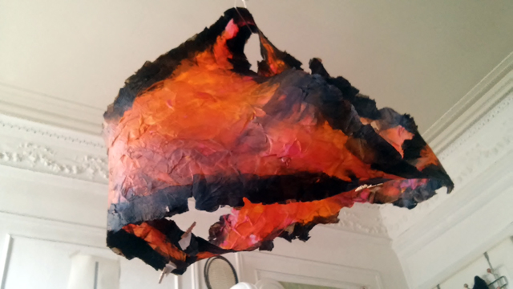
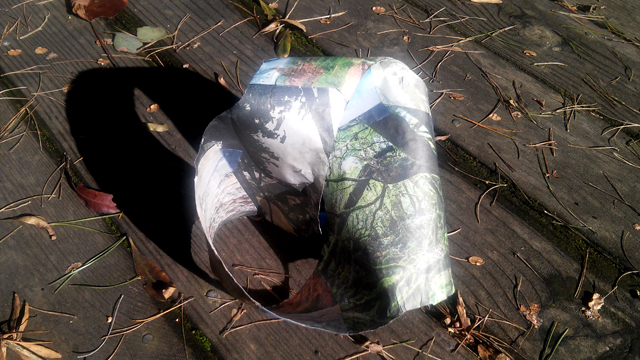
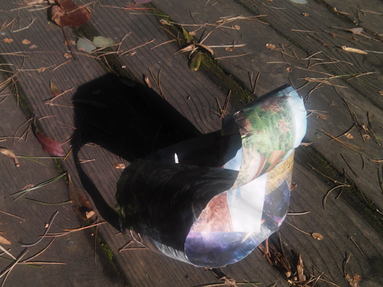
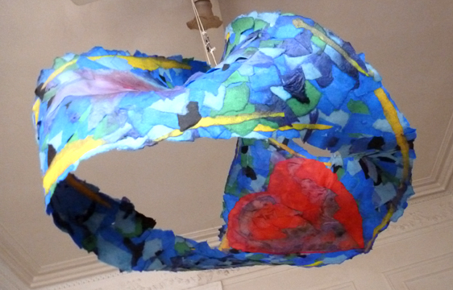
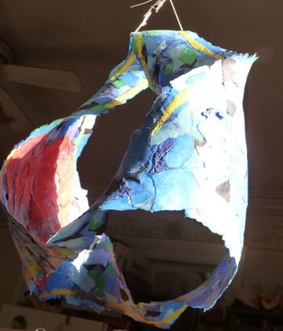
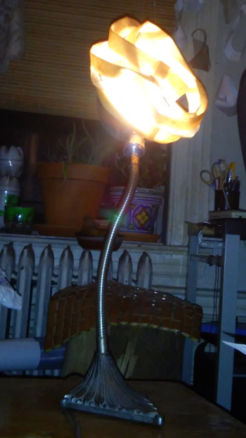
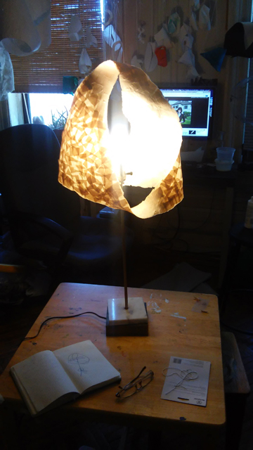
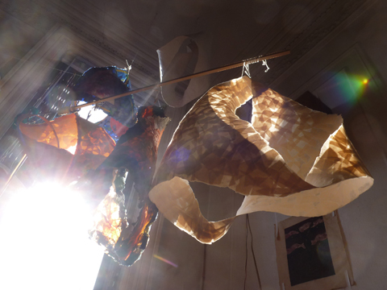
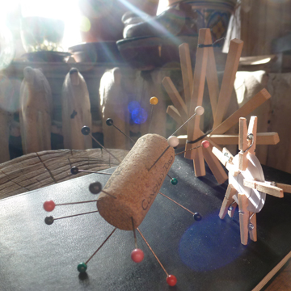
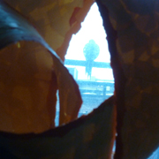

K N O T F O R M
Aaron Hope

'Mobius Wave', Paper Mache

'Opaque Sunshine', Paper Mache

'Light Fireplace', Paper Mache

'Light Fireplace', Paper Mache

'Anti-Symmetry', Metal and Plaster

'World Knot', Paper Towel and Stolen Newspaper

'World Knot', Paper Towel and Stolen Newspaper

'Valentines Knot', Collaboration with Shiva for Racket Club, Paper Mache

'Valentines Knot', Collaboration with Shiva for Racket Club, Paper Mache

'Illumiknotti', Paper Mache and LED

'Borromean Crown Lamp', Metal and Fiberglass with Upcycled Lamp

'Impossible Lamp', Paper Mache with Upcycled Lamp

Thanks for visiting!

WHY KNOT ?
Knot theory is the mathematics field studying closed-loop knot and string shapes formed in things like our DNA strands, and also in daily life in tied shoelaces and rope. Mathematical knots embed a circle in 3-d space.
Structure is from repeated modular elements in tension. Each half twist of any modular surface section creates a different mathematical knot type and surface characteristic. It's always exciting to see how a new knot will form itself!
Meanings of knots are different to people all over the world. We 'tie the knot' to get married. In Buddhism we have the crossroads of the "Endless Knot" of wandering and rebirth. In Daoism we walk in circles, the Unknot. All these forms are found in nature.

Aaron Hope lives in Brooklyn, New York.
Contact: knotform@gmail.com